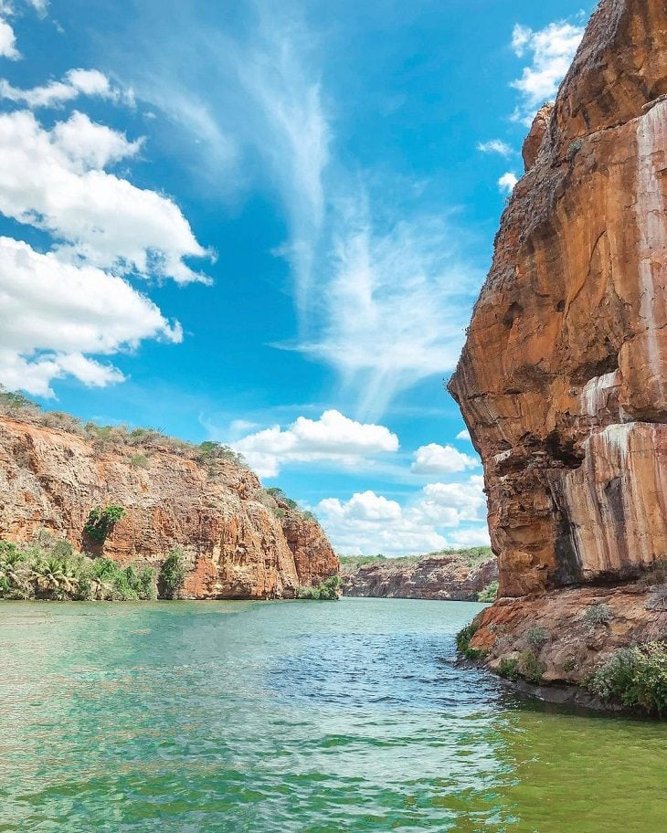

Cânions do Xingó
Histórico:
O Cânion do Rio São Francisco é o 5º maior cânion navegável do mundo, com 65 km de extensão e o Cânion do Xingó é um braço do Rio São Francisco. Possui paredes rochosas de até 50 metros de altura, situado em uma região que faz calor o ano todo, e que quase não chove.
Até 1994 o Cânion de Xingó era praticamente desconhecido, situado em pleno sertão, sem acesso, numa área próxima ao Rio São Francisco.
Em 1994, após a construção da Usina Hidrelétrica do Xingó e o enchimento da barragem as águas agitadas do Rio São Francisco deram lugar ao lago navegável, possibilitando o acesso de barco.
Além do acesso, a água adquiriu tons esverdeados que contrastam com as paredes rochosas avermelhadas, formando um cenário belíssimo.
Com a construção da barragem, o Rio São Francisco triplicou seu tamanho, inundando as áreas ao redor. O Rio Xingó é um dos inúmeros braços do Velho Chico, onde se formou o famoso Cânion do Xingó.
Onde fica o Cânion do Xingó:
Ao contrário do que muita gente pensa o Cânion do Xingó não fica no estado de Sergipe. Localiza-se em território do estado de Alagoas, em um braço do Rio São Francisco, a 3,5 km da divisa dos 2 estados, que é o centro do rio.
Porém, o ponto de acesso ao passeio é pelo restaurante Carrancas, que fica no lado de Sergipe. O ponto de partida fica a 17 km do cânion, próximo à Usina de Xingó e à cidade de Canindé de São Francisco.
Como chegar ao Cânion do Xingó
Geralmente os turistas fazem este passeio saindo do litoral de Sergipe, Alagoas ou Pernambuco. Existem várias formas de fazer este passeio, que vamos mostrar agora.

Quando ir aos Cânions do Xingó:
A melhor época para visitar os Cânions do Xingó é de maio a julho, um período com maior probabilidade de chuva. Para chegar até esse local você pode fazer de duas formas, partindo de Alagoas e também de Sergipe.
Aliás, uma curiosidade sobre esse espetáculo da natureza é que ele é o quinto maior cânion navegável do mundo. Para conhecer esse lugar, o mais recomendado é partir de Aracaju, capital do Sergipe. Além de conseguir fazer o traslado de carro, é possível chegar de ônibus, já que a cidade é ponto turístico e recebe linhas com essa rota diariamente.
As formações dos Cânions do Xingó tem aproximadamente 60 milhões de anos, bem antiga não é? No entanto, eles se tornaram atração turística depois da abertura da Usina Hidrelétrica do Xingó. Que, aliás, também pode ser visitada e aqui no nosso blog, te contamos como.
